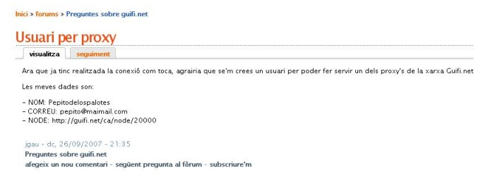
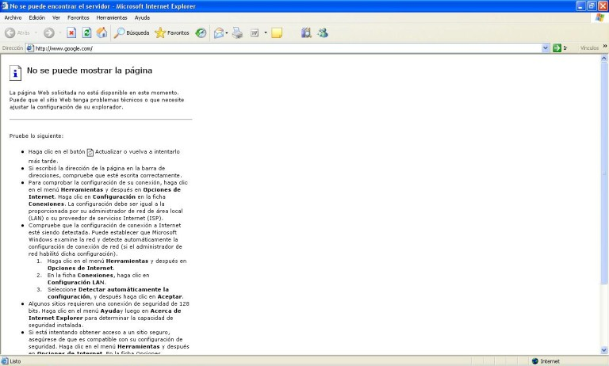
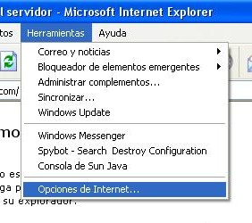
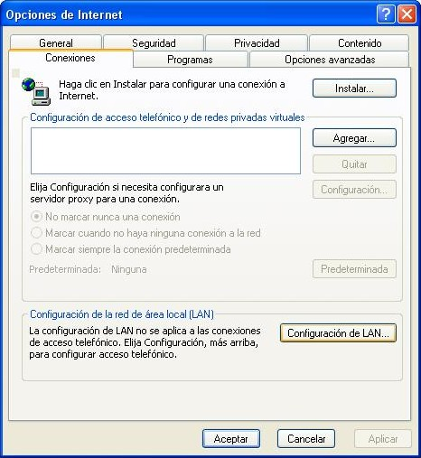
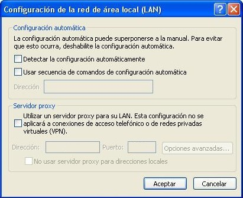
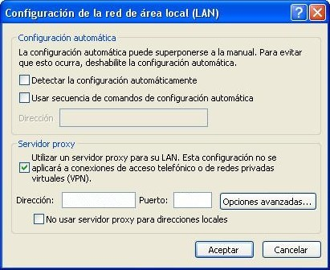
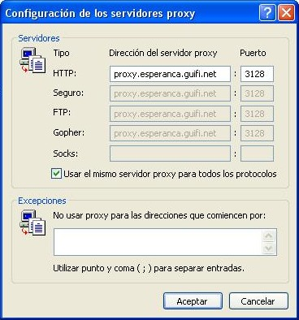

Configuració final (proxy)
Objectius
En aquest últim apartat t'ensenyarem a configurar el teu navegador per tal de
poder accedir a internet a través dels diferents proxy's que hi ha a la xarxa
Guifi.net.
Primer de tot hem d'anar als fòrums
de la pàgina Guifi.net i per mitjà d'un nou missatge, demanar que ens crein
l'usuari per poder accedir a Internet. Les dades que hem de deixar són:
- Nom real
- adreça de correu electrònic
- El nom del nostre node i/o el número de node

Ara només ens falta configurar el nostre navegador preferit per poder sortir cap
a Internet.
Procediments per al Internet Explorer
Obrim l'Internet Explorer.

Cliquem a l'apartat del menú Herramientas > Opciones de
Internet

A la finestra que s'obra, anem a la pestanya de Conexiones

Cliquem al butó de Configuracón del Lan el qual ens obrirà una
nova finestre

A l'apartat servidor proxy marquem el quadre que té com a text "Usar un
servidor proxy para su LAN" el qual activarà uns quadres de text.

Depenent la nostra ubicació, haurem d'omplir els següents quadres amb la
informació que trobareu a l'apartat Internet a través d'un proxy, que hi
ha a la següent web:
No us oblideu de marcar el quadre que posa "Usar el mismo servidor proxy para
todos los protocolos" que trobaras a la finestra que obra el botó "Opciones
avanzadas...",com es veu a la següent foto.

Un cop tinguem la informació escrita, anem clicant Aceptar a les
diferent finestres que hem anat obrint. Si tot està bé, si escrivim una pàgina
qualsevol de Internet (p. ex. www.google.com) ens hauria d'apareixer un quadre
on ens demana un nom d'usuari i una contrassenya.
Els omplim amb l'usuari i contrassenya que ens han facilitat als fòrums de
Guifi.net (tipiciament, com a usuari "nom.cognomdelapersona" i de
contrassenya "nomdelapersona" ).
I ara, a navegar!!!.